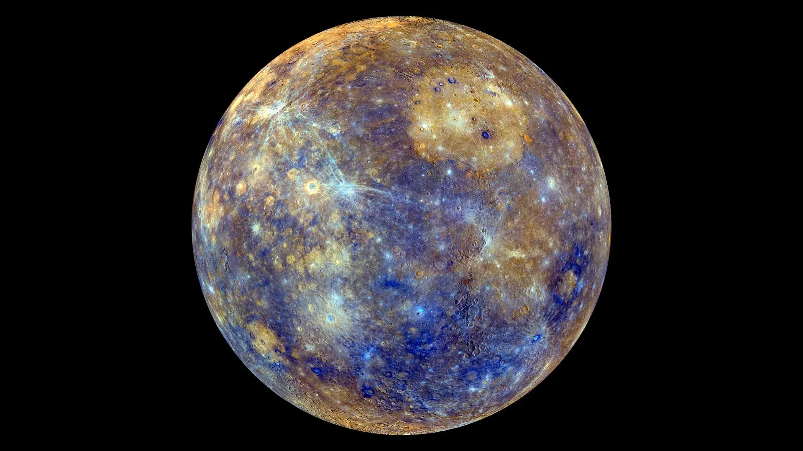
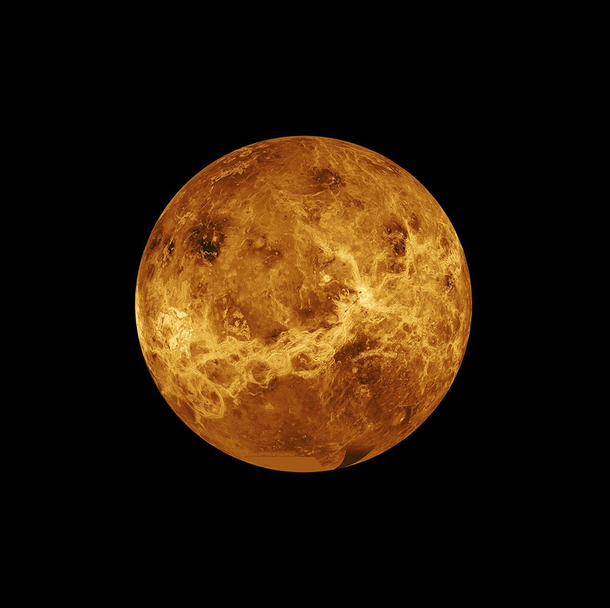
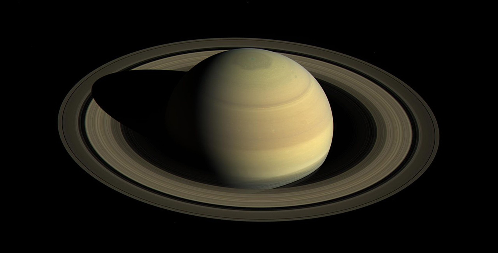

MERCURY
The Swift Planet
Mercury, the closest planet to the Sun, is a rocky world known for its extreme temperatures and cratered surface. It completes an orbit in just 88 Earth days.

VENUS
Earth's Twin
Venus, shrouded in thick clouds of sulfuric acid, is the hottest planet in the solar system. Its volcanic landscape and greenhouse effect make it both fascinating and inhospitable.

EARTH
The Blue Planet
Earth is the only known planet to support life. With its vast oceans, diverse ecosystems, and atmosphere, it is truly unique in our solar system.

MARS
The Red Planet
Mars, with its striking red hue, is home to the largest volcano and canyon in the solar system. It's a prime candidate for future exploration and possibly habitation.

JUPITER
The Giant Planet
Jupiter, the largest planet, is famous for its Great Red Spot, a massive storm larger than Earth. Its strong gravity influences the entire solar system.

SATURN
The Ringed Planet
Saturn is best known for its stunning rings made of ice and rock. This gas giant is a spectacular feature of our solar system.

URANUS
The Ice Giant
Uranus is unique for its sideways rotation and pale blue color due to methane in its atmosphere. It's a cold and distant planet with a mysterious charm.

NEPTUNE
The Windy Planet
Neptune, the farthest planet from the Sun, is a deep blue world with supersonic winds and a dynamic atmosphere. Its mysteries captivate astronomers.